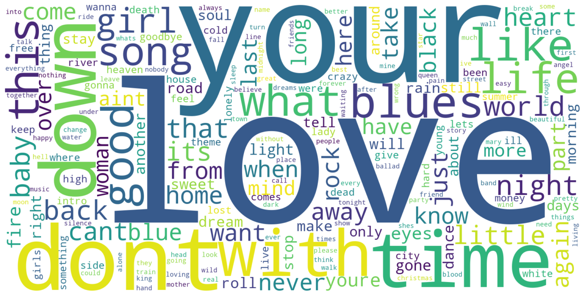

Plex Music Visualizations
Part 1: Artists With Most Albums
I'm back, and I've dived some more into my Plex music database. This time, I wanted to try creating some simple, but informative data visualizations.
The first one I wanted to make would show the artists with the most albums, and another showing the artists with the most songs.
I decided to narrow it down to show just the artists with at least 10 albums, and the ones with at least 100 songs.
So, let's take a look at some of the data!
So as we can see, I have only 62 artists with 10 or more albums. For perspective, there are over 1500 artists in my library.
It's no surprise to see Pink Floyd topping the chart with a whopping 70 albums, as my Floyd collection consists of not only multiple copies of a lot of their studio albums, but also rareties, bootlegs, multi-disc compilation box sets, and so on.
Johnny Cash at #2 makes sense as well, because I got an enormous box set back in the day of his albums, I think it was the ones from the Columbia label.
Things then start to cool off as we drop dramatically down to 37 total for both John Coltrane and the Grateful Dead, with Buckethead trailed right behind at 36 total to round out the top 5 list.
For Coltrane and Buckethead, those are mostly all studio albums I believe, but with the Dead it's due to a plethora of the Dick's Pick's live albums, as well as other Live bootlegs.
At #6 an #7 we have Kris Kristofferson and David Allan Coe respectively tied at 30 albums a piece. That should encompass their total studio releases as well as some lives and compilations as well.
I was kind of surprised to see Alice Cooper make the top 10 at #8 with 27 albums because I did not realize I had that much Alice Cooper lol. Looking into it though, yeah I appear to have all of his studio albums.
Rounding out the top 10, we've got Hank Williams and Duke Ellington with 26 and 25 albums respectively. These were both big box sets that I downloaded of their entire collections.
Looking through the others on the list, everything seems about correct to me. Willie Nelson is lagging a bit behind his peers and did not make the top 10. Lots of BTBAM and ISIS. Prince and Dylan representing the home state of Minnesota. We can see the various Slaughterhouse members on the list, Crooked almost cracking the top 10. And it's nice to see Mr. Eaglesmith show up towards the end with 11 total albums.
Part 2: Artists With Most Songs
Now, I wanted to get a look at the artists with the most songs as well, since having the most unique albums doesn't necessarily equate to having the most songs.
So, I made another graph, this time with that relationship. Let's take a look.
So, things are kind of similar, but we do have some new artists cracking the top 10 that were not there on the album list.
Obviously, Pink Floyd is still on top with a ridiculous 1135 total songs. This is due to multi-disc releases, live albums, things like that which include far more tracks than a normal album could.
Just about 200 songs behind at 916 is Johnny Cash, which makes sense as we said before, I have an enormous box set of his albums.
Grateful Dead take the #3 spot this time with 835 songs, mostly due to live albums having tons of tracks.
Old Hank Williams shows up in #4 this time, with the Beatles trailing behind him to round out the top 5.
Sinatra now shows up #6 with his huge multi-disc box set doing some heavy lifting. We then see about a 100 song drop off down to Duke Ellington's box set. And although we know Coe and Kristofferson have the same amount of albums, it's Coe that takes the lead in songs by about 50.
Crooked gets to make the top 10 this time, with his many solo mixtape releases with tons of tracks getting him up to 338 total.
Looking through the rest, it mostly correlates correctly with the album chart, with a lot of the same names making the top 50, but new ones here and there as well.
Part 3: Next Visualization Ideas
Now I need to figure out what to do next. My guess is I'll need to get ChatGPT more familiar with the way Plex's database handles the music metadata so we can find more interesting things to mess with other than just the simple Artist, Album, Song, Year, Genre that I have right now. I could also try brainstorming some more visualizations just based on those 5 if there really isn't anything else to do, but maybe there are some cool graphs and charts to make still with combos of those.
Anyway, I'll leave you with this pretty nicely generated word cloud that I did of all my song titles. See ya later.
